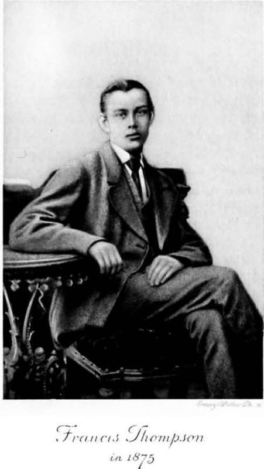

The Boy. Part 6
Description
This section is from the book "The Life Of Francis Thompson", by Everard Meynell. Also available from Amazon: The life of Francis Thompson.
The Boy. Part 6
And of Religion: more pressing than the invitation to the northern road would be the invitation to Ushaw's Chapel. His lessons in ceremonial were not the least he was taught. Eton could have given him his Latin, but his Liturgy was more important. His singing-gown was a vestment, and he learnt its fashioning at college. He learnt the hymns of the Church and became her hymn-writer; he learnt his way in the missal, and came to write his meditation in "The Hound of Heaven." A priest, who was his schoolfellow, writes:
Thoughts Of The Priesthood
" No Ushaw man need be told how eagerly all, both young and old, hailed the coming of the ist of May. For that day, in the Seminary, was erected a colossal altar at the end of the ambulacrum nearest the belfry, fitted and adorned by loving zeal. Before this, after solemn procession from St. Abysms', with lighted tapers, all assembled, Professors and students, and sang a Marian hymn. In the College no less solemnity was observed. At a quarter past nine the whole house, from President downwards, assembled in the ante-chapel before our favourite statue. A hymn, selected and practised with great care, was sung in alternate verses by the choir in harmony, and the whole house in unison. ' Dignare me laudare, te, Virgo Sacrata/ was intoned by the Cantor; ' Da mihi virtutem contra hostes tuos' thundered back the whole congregation ; and the priest, robed already for Benediction, sang the prayer ' Concede, misericors Deus,' etc. Singing Our Lady's Magnificat, we filed into St. Cuthbert's, and then, as in the Seminary, Benediction of the Blessed Sacrament followed. For thirty-one days, excepting Sundays and holy days, this inspiring ceremonial took place-its memory can never be effaced."
Although it is somewhere affirmed that Francis betrayed no singular piety, we know how devout was his young heart. It was intended for him that he should enter the Church, and he studied for the priesthood. Letters written to his parents by those who had him under observation go to make the history of the case; on September 6, 1871, Father Yatlock wrote :-
" I am sure, dear Mrs. Thompson, that it will be a pleasure and a consolation to you and Dr. Thompson that Frank gives the greatest satisfaction in every way; and I sincerely trust, as you said the other evening, that he will become one day a good and holy priest."
But at the last his ghostly advisers found him unfitted. They held his absent-mindedness to be too grave a disability, and in his nineteenth year he was advised to relinquish all idea of the priesthood. In June 1877 the President wrote a letter proving the good will, a quality that may easily collapse before a silent, strange, evasive child, which was felt for Francis. The President wrote :-
" With regard to Frank, I can well appreciate the regret and disappointment which you and his mother must feel. Frank has always been a great favourite of mine ever since he came as a child to the Seminary. He has always been a remarkably docile and obedient boy, and certainly one of the cleverest boys in his class. Still, his strong, nervous timidity has increased to such an extent that I have been most reluctantly compelled to concur in the opinion of his Director and others that it is not the holy will of God that he should go on for the Priesthood. It is only after much thought, and after some long and confidential conversations with Frank himself, that I have come to this conclusion : and most unwillingly, for I feel, as I said, a very strong regard and affection for your boy. I earnestly pray God to bless him, and to enable you to bear for His sake the disappointment this has caused. I quite agree with you in thinking that it is quite time that he should begin to prepare for some other career. If he can shake off a natural indolence which has always been an obstacle with him, he has ability to succeed in any career."
Indolence is one name of many for the abstraction of Francis's mind and the inactivities of his body. He was not of the stuff to " break ice in his basin by candlelight," and no doves fluttered against his lodging window to wake him in summer, but he was not indolent in the struggle against indolence. Not a life-time of mornings spent in bed killed the desire to be up and doing. In the trembling hand of his last months he wrote out in big capitals on pages torn from exercise books such texts as were calculated to frighten him into his clothes. " Thou wilt not lie a-bed when the last trump blows"; "Thy sleep with the worms will be long enough," and so on. They were ineffectual. His was a long series of broken trysts-trysts with the sunrise, trysts with Sunday mass, obligatory but impossible ; trysts with friends. Whether it was indolence or, as he explained it, an insurmountable series of detaining accidents, it is certain that he, captain of his soul, was not captain of his hours. They played him false at every stroke of the clock, mutinied with such cunning that he would keep an appointment in all good faith six hours after it was past. Dismayed, he would emerge from his room upon a household preparing for dinner, when he had lain listening to sounds he thought betokened breakfast. He was always behindhand with punctual eve, and in trouble with strict noon.
And yet there were the makings of the parish priest, or the hint of them, in his demeanour. " Is that the Frank Thompson I quarrelled about with my neighbouring bishop ?" asked Cardinal Vaughan (then Bishop of Salford) when many years later he heard the name of the poet from my father ; " each of us wanted him for his own diocese."
The ritual of the Church ordered his unorderly life; he was priestly in that he preached her faith and practised her austerities. Nature he ignored till she spoke the language of religion ; and he, though secretly much engrossed in his own spiritual welfare, was, priestlike, audible at his prayers-or poetry. His muse was obedient and circumspect as the voice that proclaims . the rubrics. He was often merely in Roman orders, so to say, when the critics accused him of breaking the laws of English and common-sense. At the same time he failed signally in the practical service of his fellows. His rhymes were the only alms he gave ; but annoyances he seemed at times to distribute as lavishly as St. Anthony his loaves.
Having done no wrong, he bore home a disappointment for his parents. It is no light thing to have a son, destined for the sheltered rallying-place of the Church, thrust back into a world he had been well rid of. Nor did his indifference as to his prospects (the disguise, perhaps, of his own disappointment) inspire them with confidence. I have already mentioned that it is thought by many persons well-versed in the spiritual affairs of the family that his failure in the Seminary was with him an acute and lasting grief.
On the other hand, he was from his childhood a prophet in his own strange land, and it is probable that while his family were solicitous for him to enter the Church, he recognised the justice of his confessor's opinion. The "A.M.D.G." inscribed in his exercise books was none the less the perfect dedication. "To the Greater Glory of God" was already his pen's motto. He saw " all the world for cell," and he made much of the pains he thought necessary for his poetry.

Continue to: